Chapter Six · Section (d): Ahadith on the foregoing subjects (concerning the excellence of Tawakkul)
Hadith 19
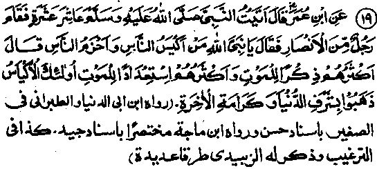
Ibne Umar Radhiallaho anho says: Once ten of us, including myself, visited Rasulullah. Sallallaho alaihe wasallam, when a man from the Ansaar stood up and said, "O Rasulullah! Who is the wisest and the most prudent of men?" Rasulullah replied,‘nThe wisest of men are those who remember death more than everybody else, and who are occupied in making preparations for the Akhirah more than everybody else. It is such people, indeed, who win distinction in this world and who will be raised to positions of honour in the Akhirah".
It occurs in many Ahadith that Rasulullah Sallallaho alaihe wasallam used to exhort people, in various ways, to remember death most often. Some of these Ahadith have already been quoted under Hadith 9, on restraining hopes. We have also quoted a Hadith in the same context, in which Rasulullah Sallallaho alaihe wasallam is reported to have said, "Remember very often the cutter-off of pleasures i.e. Death.’ The insistence on the importance of remembering death makes it worthwhile treating the subject exclusively in the following pages. For, remembering death very often has many advantages: it helps a person to avoid high hopes; it motivates preparation for life after death; it causes a man to develop non-attachment to worldly pleasures (which is a necessary ideal), it dissuades one from hoarding money needlessly; it persuades one to perform acts of virtue for the Akhirah; it induces a person to repentance; it prevents from doing wrongs and denying people their due rights. In short, meditating on death has many spiritual benefits. So the Divines particularly advise most of their disciples to spare some time daily for meditation on death. A Hadith says that once a man, standing in the presence of Rasulullah Sallallaho alaihe wasallam, said, "O Rasulullah! Who is the wisest of all the believers." Rasulullah Sallallaho alaihe wasallam replied, "He who keeps death much in his remembrance and who makes good preparations for it". (Ithaaf). has been narrated in another Hadith that once Rasulullah Sallallaho alaihe wasallam recited the following Ayat from the Holy Qur’an:
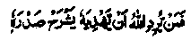
And whomsoever it is Allah’s will to guide, He expands his heart for Islam (al - An'aam: 12)
and said, "When the ‘Noor’ (light) of Islam enters his breast, it expands." Someone asked, "Is there any sign (by which one might know that the ‘Noor’ has entered one’s breast; Rasulullah Sallallaho alaihe wasallam replied, "Yes, one develops dislike against this world Adi of false hopes (this world), and begins to long for the eternal (Akhirah), and starts making preparation for death before it comes". (Mishkaat)
Rasulullah Sallallaho alaihe wasallam once said, I asked permission of Allah Ta'ala to visit the grave of my mother and I was allowed; so visit graves, for it helps in keeping death in mind." (According to an alternative reading, it is a source of admonition’) Another Hadith has it to the effect that: "Visit graves; for it helps to develop indifference to worldly interests and makes one mindful of Akhirah". Abu Zarr Radhiallaho anho says that once Rasulullah Sallallaho alaihe wasallam said to him, 'Visit graves from time to time; for, it serves as a reminder of the Akhirah; wash the dead, for, it is a cure for a person who is devoid of virtues and helps him to take heed; attend funeral prayers, for,it might make you feel concerned for the Akhirah; and those who have this concern remain in the shadow of Allah’s Merry and seek a virtuous life". (Targhib)
Another Hadith reports Rasulullah Sallallaho alaihe wasallam as saying: "Visit the sick and follow funerals, for these make one mindful of Akhirah’. Once a divine was following a bier when he came upon some people who were expressing their sorrow for the deceased. He said, "I suggest that you should grieve on your own account; for it will be more beneficial. This man passed away and has become immune from three afflictions; he need not fear to face the Angel of Death again; he will not have to suffer the throes of death again; he is no longer in danger of facing a bad end." Once Abu Dardaa Radhiallaho anho was following a bier, when a wayfarer asked him, "Whose bier is this’. The Sahabi said, "It is your bier; and if you resent it is my.’ Saying so,‘it is my bier", he meant to say that this was no occasion for idle talk; one should rather think of one’s own death on such occasions. Hasan Basri Rahmatullah alaihe says, I am greatly amazed at the people who have been commanded to make preparations for the journey to Akhirah, the call to embark on which has been announced, and yet they are engaged in worldly activities that are but a pastime. It is said of him that when he saw a bier passing by, he looked so deeply grieved that one might think he had just returned from the graveyard after burying his own mother." (Tanbeeh-ul-Ghafileen)
Aishah Radhiallaho anha says, "A Jewess once visited me and, after I had obliged her with something, she said, ‘May Allah protect you from punishment in the grave I asked Rasulullah Sallallaho alaihe wasallam, ‘Is there punishment in the grave?’ And he replied, ‘Yes, the punishment in the grave is real’. After this, Rasulullah Sallallaho alaihe wasallam used to seek Allah’s protection from the punishment in the grave? at the end of every Salaat, as a lesson for his followers’. According to another Hadith, Rasulullah Sallallaho alaihe wasallam is reported to have said, “The dead are punished in the graves so severely that their cries are heard by the animals”. Another Hadith has it to the following effect, “Were it not for my fear lest you should stop burying the dead, I would ask Allah Ta'ala to let you hear the punishment in the grave". It has been reported about Uthman Radhiallaho anho that, when he would stand over a grave, he would weep so bitterly that his beard would get wet with tears. Someone asked him, "You do not weep so sorely when you remember Jannah and Jahannam as you do when you are reminded of the grave". He replied, "I have heard Rasulullah Sallallaho alaihe wasallam saying, "The grave is the initial stage of the Akhirah; if one escapes punishment in it, all the next stages are much easier)but if one does not escape punishment in the grave, all the next stages are severer than it’! And I have also heard him saying,"! have never seen a sight more horrifying than that of the grave." A Hadith reports Rasulullah Sallallaho alaihe wasallam as saying, "In the grave, the abode into which a man will move after the Day of Resurrection is shown to him every morning and evening; if he is destined for Jannah, he is shown his abode in Jannah, to his great relief and joy, while if he is destined for Jahannam, he is shown his abode in Jahannam (and the fear and anticipation of the impending doom adds to his pain and misery)’
Aishah Radhiallaho anha says: "Once a Jewess came to my door and asked me for some food. She then said, "May Allah grant you protection against the temptation of the Dajjal and save you from the punishment in the grave!" I asked her to wait Meanwhile Rasulullah Sallallaho alaihe wasallam came and I told him what the Jewess had said about the Dajjal and the punishment in the grave. Rasulullah Sallallaho alaihe wasallam said, "There has been no Nabi or Rasul among the Ambiya of the past who did not warn his people against Dajjal and his temptations, but I tell you something about Dajjal which no Nabi or Rasul has told his Ummah: he is one-eyed; the word ‘Kaafir’ (infidel) is written on his forehead, which every Mo’min will be able to read. As regards the ordeal in the grave: when a pious man dies, the angels come to his grave and make him sit up. He sits up fearless and without grief. He is first asked about Islam and then his opinion about the man (i.e. Rasulullah) who was sent to them and he replies that he is Muhammad Sallallaho alaihe wasallam) who was sent by Allah Ta‘ala as a Rasul to His men, with the clear guideline, and that he believed him to be a true Rasul and believed in' the truth of his message. After this, a place in Jahannam is shown to him, where he sees that people are huddled together, attacking each other, and he is told to look at the horrors from which Allah Ta'ala Has protected him. Then he is shown a place in Jannah; he looks at its beauty and adornments, and feasts his eyes on the scenes of eternal bliss. He is told that this will be his abode after the Day of Resurrection, as he had belief in Akhirah,died in that belief and will be holding the same belief on the Day of Resurrection.
"But when an evil person dies, he is made to sit up in the grave and he sits up, disheartened and terrified. He is asked the same questions mentioned above. He replies that he does not know and says that he held the same opinions as were expressed by other people. Then a door is opened for him in the direction of Jannah and he looks at its beauty and adornments and the bounties therein. After this, he is told that this was the abode which had been prepared for him initially, but he has been deprived of it. Then Jahannam is shown to him and he looks at the inmates of Jahannam huddled together, as though they were fighting against one another. He is told that this is going to be his resting-place, for, he had doubts about the true religion, died in doubts and will be resurrected in the same condition on the Day of Resurrection.’ (Targheeb)
Abu Qatadah Radhiallaho anho says: "When a funeral passed by Rasulullah Sallallaho alaihe wasallam, he looked at it and said, ‘He is relieved or others are relieved of him.” He then said,"A Mo’min feels relieved by escaping the toils and sufferings of the world, through his death, and enjoys the Mercy of Allah Ta'ala. He is relieved. But when a persistent sinner dies, men, habitations, trees and animals find relief in his death." (Mishkaat)
For, owing to the evil influences of a wicked man’s misdeeds.’ calamites befall the earth, rains are stopped, commotion arises in the villages, trees wither up and the animals find it bard to feed themselves. Therefore, when such a person dies, his death brings relief to all those who have been under the evil influence of his sins. Ibne Umar Radhiallaho anho said, "Once Rasulullah Sallallaho alaihe wasallam gripped me by the shoulder and said, "Be in the world as if you were a stranger or a wayfarer.’. Ibne Umar Radhi-allaho anho also says, "When the day dawns, do not expect to see the evening and when it is evening, do not expect to see the morning’, when you are in health, provide something for the time of illness i.e. if you perform good deeds when in health, the rewards will accrue to you even in your illness, and make provisions while living to serve you at the time of death". (Mishkaat)
Abu Handrail Radhiallaho anho says, "We went to a funeral in company with Rasulullah Sallallaho alaihe wasallam, and on reaching the graveyard, he sat by the side of a grave and said, "Everyday the grave announces, in clear words, ‘O son of Adam, you have forgotten me. I am an abode of loneliness, I am the house of estrangement (where you wo’nt find any one familiar), I am the house of horrors, I am full of worms, I am extremely narrow but I am expansive for a person for whom Allah Ta'ala wills me to be so.” He then said, "The grave may be a garden of Jannah, or a pit of Jahannam". Sahl Radhiallaho anho says that one of the Sahabah died and they began to praise him and spoke highly of his devotions. Rasulullah Sallallaho alaihe wasallam kept silent and listened to what they spoke and, after they had finished, said, "Did he keep death in remembrance?" They replied that he seldom talked of it. He then asked, "Did he abstain from a thing he desired to have?" On receiving the reply that he did not, Rasulullah Sallallaho alaihe wasallam said, "He cannot, then, attain to the grades of excellence which you can attain".
Another Hadith says, “Mention was once made of a Sahabi in the presence of Rasulullah, and the Sahabah spoke highly of his devotions and his diligence in self-mortification. Rasulullah Sallallaho alaihe wasallam asked, ‘How often did he remember death?’ The Sahabah replied that they had not heard him talking of death. Rasulullah Sallallaho alaihe wasallam said, ‘He cannot, then, attain to such a high spiritual rank (as you consider him to have attained)’. Baraa Radhiallaho anho narrates, "Once we went out with Rasulullah to attend the funeral and burial of a person. When we reached there, Rasulullah Sallallaho alaihe wasallam sat by the side of a grave, wept so profusely that the ground became wet with his tears, and then said, "Brothers, prepare yourself for (your entry in) the grave." (Targheeb)
Shaqiq bin Ibrahim Rahmatullah alaihe says: People seem to agree with me when they say that they believe in four things, but their actions belie what they claim to believe:- (i) they say that they are slaves (Bondsmen) of Allah Ta'ala, but their actions betray that they regard themselves to be freemen;
(ii) they say that Allah Ta'ala has taken upon Himself the responsibility to give us our sustenance, but they never rest content until they hoard enough of worldly provisions;
(iii) they say that Akhirah is preferable to this world, but they are ever engaged in amassing wealth, and art least concerned about Akhirah.
(iv) they say that death is inevitable, but they are absorbed in worldly activities as though they were to live here forever!
Abu Haamid Lafaaf Rahmatullah Alaihe says, "He who keeps death much in his remembrance, Allah Ta'ala bestows three favours on him: 1. he readily turns to Allah Ta'ala in repentance; 2. he is granted contentment; 3. he shows greater interest in devotion in all his modes of worship. And, he who is heedless and unmindful of death is punished by Allah Ta'ala in three different ways: 1. he persists in sins and hesitates to offer "Taubah’. 2. he is not contented with his income; 3. he becomes sluggish in the performance of his devotions. "(Tanbih-ul-Ghafileen)
Imaam Ghazali Rahmatullah Alaihe writes: All Praise be to Allah Ta'ala Who has twisted the necks of powerful tyrants in the tight strangle-hold of death and broken the back of mighty kings with the sudden blow of death; Who has dashed, through death, the hopes of those who possessed rich treasures of wealth! Ah! These people did not even like a mention of death. But when the appointed hour (of death) came for them, they were carried away and buried in the dark pit of the grave, leaving behind their profusely lighted high palaces, where they used to lie reclining on soft couches! No more could they enjoy the company of their beautiful slave-girls or have their slaves waiting upon them, but j were forced to live with the worms! They could no longer feast upon rich varieties of food and drink, but were made to roll in dust! Nor could they sit in company with their friends, but were made to suffer the horrors of lonesome death! Were they able to build any castle to protect themselves against death? Could they escape death by any other means? Glorified be Allah, the Supreme, Vanquisher and Subduer of all, Who has no partner in His Attributes! He Alone is Eternal, Who has no equal. We all know for certain that death is inevitable and that it must come to all; that everybody is destined to go into the dust and live with the worms in the grave; that everybody shall have to face Munkar and Nakeer (the two angels who examine the dead in their graves as to their faith); that everybody after spending a long time in the grave must see the horrible spectacle of the Day of Resurrection and must go either to Jannah or to Jahannam, which will be his eternal abode thereafter. Therefore, it is only wise that each one of us should be constantly worried about his death, should keep it in constant remembrance, should talk of it often and occupy himself with preparations for it, even at the cost of worldly pursuits. We should also anticipate our death all the times, lest it should take us unaware. For, no one knows the time when his death may occur. Rasulullah Sallallaho alaihe wasallam said,-The wise man is he who subdues his ownself and remains occupied with what will be of use to him in the life after death (to the end of the Hadith)". And no one can make preparations for a thing unless he remains concerned about it all the time, keeps it in his remembrance and talks of it most of the time. Naturally, if a person is engrossed in worldly pursuits, is beguiled by the glamour of this world, and is enamoured of lusts and passions, he must be unmindful of death. And, even when people talk to him to death, he will feel disconcerted and show resentment. Allah Ta'ala says of this:
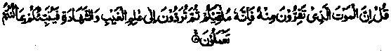
Say (unto them, O Muhammad) Lo! the death from which you shrink will surely meet you, and afterward you will be returned unto the Knower of the invisible and the visible, and then He will tell you what you used to do (and give you befitting recompense). (al-Jum'ah: 8)
The Ulama say that men may be divided into four broad categories, with regard to their attitude towards death:
Firstly, there are people who are so deeply absorbed in worldly activities that they do not even like to listen to a mention of death, for, they know that the death will put an end to their sensual pleasures. Such people do not remember death; and, when they do talk of it, they condemn it because it will cause them to forsake this world and these feelings fill them with sorrow.
Secondly, there are people who want to turn to Allah Ta'ala in repentance, but are still in the initial stage. When they think of death they feel afraid of Allah Ta'ala, which fear, in turn, causes them to repent more deeply. They are afraid of death, not because they do not want to leave this world but because their repentance is not perfect Such persons do not want to die because they want to reform themselves and are worried on that account They cannot be blamed for this fear or dislike of death, and the following Hadith of Rasulullah Sallallaho alaihe wasallam does not apply to them: If anyone does not want to meet Allah Ta'ala then Allah Ta'ala does not want to meet him. For, in reality, they do not dislike their meeting Allah Ta'ala, but only feel shy, owing to their own sins and shortcomings. Their case is like that of a person who wants to prepare beforehand for meeting his loved one, so that he may see his beloved in a condition which is most pleasing to him. However, it is necessary that they should be constantly Concerned about preparations for death and should not occupy themselves with any other pursuit; otherwise they will also be counted as belonging to the first category of peopled.e.those absorbed in worldly pursuits.
Thirdly, there are the Divines who know their Lord intimately and are perfect in their repentance. Such people love death and pine for it, for, what hour can be more blissful for a lover than the hour of his meeting with the loved one? The hour of death, for such people, is the hour of meeting with Allah Ta'ala. A true lover is always mindful of the promised hour of meeting and he can never forget it. It is such people who crave for death to come soon; they always anticipate death and wait for it impatiently, for, they want to leave this worldly abode of sins. A Tradition says that, when the hour of death drew near for Huzaifah Radhiallaho anho, he said, "The coveted hour (of death) has come at last; and at a time when I needed it most! He who does things which make him feel ashamed is not successful. Thou knowest, O Allah! that I have always loved poverty better than riches, and sickness better than health, and death better than life! O Allah! Grant me death immediately, for I love to meet You."
Fourthly, there are people who are perfect in their attitude towards death; they are reconciled to the will of Allah Ta'ala and desire nothing except what Allah Ta'ala has chosen for them. Thus they wish neither to live nor to die of their own accord. This symbolizes the height of love for Allah Ta'ala, which consists in complete surrender (Tasleem) and acquiescence (Ridha)
At any rate, remembrance of death enables a man to earn rewards and blessings of Allah Ta'ala, even if he is engrossed in the world, because it disconcerts his moods of lustful pleasure and causes him to withdraw a little from the material world. It was in view of this effect of remembering death that Rasulullah Sallallaho alaihe wasallam said, "Remember death which shatters lustful pleasures." Another Hadith narrates, "If the animals had as much knowledge of death as you have, you would not find a fiat animal for your food". Aishah Radhiallaho anha once asked Rasulullah Sallallaho alaihe wasallam’ "Can anyone attain to the rank of the Shuhdaa (Martyrs) without sacrificing his life for the cause of Allah Ta‘ala? Rasulullah Sallallaho alaihe wasallam replied, ‘‘Yes, he who remembers death twenty times everyday.’ Another Hadith says that he. who recites the following Duaa (supplication) twenty-five times everyday can attain to the rank of the Shuhdaa (Martyrs):
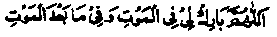
"O Allah! bestow on me blessings when I meet my death, and bless me in what follow death".
These blessings accrue because the remembrance of death causes a person to disregard worldly pursuits and incites him to prepare for the Akhirah. Forgetfulness of death, on the other hand, causes a person to indulge in passions and lustful pleasures of the world.
Ataa Khurasani Rahmatullah alaihe says: Once Rasulullah Sallallaho alaihe wasallam came upon some people who were sitting together and laughing loudly, and said to them, In your meetings, do include talk of the shatterer of lustful pleasure." On being Asked what he meant by it, Rasulullah replied, ‘Death’. According to another Hadith, Rasulullah Sallallaho alaihe wasallam once said, "Keep death much in your remembrance, for’ it removes sins and causes a person to renounce the world". (Ihyaa)-lt occurs in another Hadith that once Rasulullah Sallallaho alaihe wasallam said, "If you knew what circumstances you would have to face after death, you would not relish your food, nor enjoy the taste of water". Rasulullah Sallallaho alaihe wasallam once admonished one of the Sahabah thus: "Keep death very much in your remembrance; it will cause you to turn away from things of the world". Still another Hadith has it thus: “Keep death very much in your remembrance; for, it strengthens the heart of man and makes it easier for him to face death’! Once a Sahabi said to Rasulullah, "O Rasulullah, I have no love for death. What should I do to cure myself." Rasulullah Sallallaho alaihe wasallam asked him if he possessed any property and, on his replying that he did, told him, "Send it forth to the next world for, a man’s heart is attached to his possessions. After he has sent forth his property (given it away as Sadaqah etc.), he himself desires to be with it. And if he has left his property behind, he himself desires to stay with it". (Ithaaf).
A Hadith says: "When two third of the night had passed, Rasulullah Sallallaho alaihe wasallam would say, ‘O people, remember Allah! remember Allah! The quake of Doomsday will occur soon! The time for the blowing of the Trumpet (Soor) is drawing near! And everybody’s hour of death, along with its pangs and throes, has come!" (Mishkaat). It was the custom of Umar Ibne Abdul. Aziz Rahmatullah alaihe to invite a number of Ulama every night, who would discourse on death, the Day of Resurrection and the circumstances of Akhirah. And thereupon he wept so bitterly that one might think he was weeping over a dead body laid before him. Ibrahim Taimi Rahmatullah alaihe says’ "Two things have caused me to turn away from sensual pleasures of the world; death and the fear of reckoning before Allah Ta'ala.' Kah Radhiallaho anho says, ‘He who realises what death signifies will find that, by comparison, all the sufferings of this world are easier to tolerate." Ash'ath Rahmatullah alaihe says: "Whenever we visited Hasan Basri Rahmatullah alaihe and sat with him, we heard him talking to his companions of death and of'the circumstances of the Akhirah! Once a woman came to Aishah Radiallaho anha and complained to her of her own hard-heartedness whereupon Aishah advised her to keep death much in remembrance to soften her heart. The woman did so and came again after a few days, to express her thanks to Aishah Radhiallaho anha. (Ihya).
Imaam Ghazaali Rahmatullah alaihe says, "Death is a tremendous thing to fear, but most people are heedless of it. Many people do not even talk of death, owing to their absorption in worldly affairs. A few talk of death but their minds are occupied with other things and, therefore, it does them little good. It is important that, from time to time, one should concentrate upon death, to the exclusion of all other things and imagine that death is staring one in the face. One should think of one’s friends and relatives and recall to one’s mind how they were placed on the bier, carried to the grave and buried under mounds of earth. One should imagine their faces and think of their high ambitions and the changes that dust might have wrought in their handsome faces, and how their bodies might have decayed, how their children were orphaned, their wives were widowed how their relatives were left to weep over their loss. One should think how their fortunes were distributed and how their clothes were left behind (never to be worn by them again)! One should, then, say to one-self, I shall have-to suffer the same fate one of these days. How these people, who are lying in their graves, used to laugh and talk in meetings. How they indulged in lusts, but are now lying in the dust! They did not like to talk of death but have fallen a prey to it! They were intoxicated by their youthful vigour, but are lying today in the graves, forsaken and uncared for! How deeply absorbed they were in the affairs of the world but now their hands and feet are scattered apart and worms are crawling on their tongues! Their bodies have become food for worms! How heartily they laughed, but now their teeth have decayed and fallen out’ They made ambitious plans and arrangements for many years to come, though death loomed over their heads; little did they know, on the last day of their life, that they were destined to spend that very night in the grave! The same is the case with me. Though I am busy making arrangements for years to come, I do not know what is going to happen tomorrow’.(Ihyaa). An Urdu poet says:
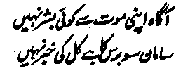
No human knows about his hour of death; though man may plan to live for a hundred years, he never knows what may happen tomorrow!
The angels deputed by Allah Ta'ala, are issued instructions for the whole year on one particular night of the year, they are assigned duties for the year and informed that such and such things have been decreed for such and such person. The Ahadith vary as to whether these orders are issued on Lailat-ul-Qadr’ (one of the last ten nights of Ramadhan) or on the middle night of Shaitan (Shab-e-Bara’at) but are in agreement about the fact that, on one night, the lists of those destined to die during the year are handed over to the angels. Many a man is engrossed in sports and pastimes while, in the heavens above, orders have gone out for his arrest; it has been decreed that he will suffer death and no one can intercede with Allah Ta'ala, or appeal to Him, to change His decree! Nor can the decreed hour of a man’s death be delayed a minute! Ibne Abbas Radhiallaho anho commenting on Surah ‘ad-Dukhan’ says "On the night called ‘Lailat-ul-Qadr’, the decrees of Fate are transcribed from the ‘Lauh-e-Mahfooz’ (the Guarded Book of Fate) and a record is 'made of all that is decreed for the year. A decree is issued about the amount of the provisions to be sent down, the persons destined to die, the persons to be born and the amount of rains to be sent down during the year. So much so, that a list is prepared of the names of the persons who are going to perform Hajj in that years". A Hadith reports Ibne Abbas Radhiallaho anho as saying, "You will notice that a person is walking about, in the bazars, though his name has been recorded in the list of those who are destined to die in that year." Abu Nadhrah Rahmatullah alaihe says, "On this night, the angels are assigned their duties for the whole year. And, orders are issued about the means of welfare apportioned for the year, about the evils to be suffered, about the sustenance to be provided, about the persons destined to die, about the afflictions and about the cheapness or dearness of commodities." ‘Ikramah Radhiallaho anho says, "On the middle night of Sha'ban (Shab-e-Barat), all the events decreed for the year are assigned to the angels; the lists of the persons destined to die, and of those who will perform Hajj during the year are handed over to the angels; and no changes can be made in the lists." According to another Hadith, Rasulullah Sallallaho alaihe wasallam once said, "(On this night), the angels are given the names of persons who are going to die during the year from one Sha'ban to the next, with the specific hours of death-destined for each. And, many a man gets married in this world and a child is born to him while, in the heavens above, his name has been recorded in the list of the dead’.
Aishah Radhiallaho anha says: "Rasulullah Sallallaho alaihe wasallam used to fast very frequently during Sha'ban, for, it is in this month that a list is prepared of those who are destined to die during the year. And many a man is engaged in getting married while, in the heavens above, his name has been recorded among the dead; or, again, a man is preparing for Hajj while his name has been enlisted among the dead." Another Hadith reports that once Aishah Radhiallaho anha asked Rasulullah Sallallaho alaihe wasallam why he fasted more frequently in the month of Sha'ban, to which he replied, "In this month, a record is made of those who are destined to die during the year and I wish that, when my name is recorded in the list of the dead, I should be observing a fast" A Hadith says that, every year, on the middle night of Sha‘ban, Allah Ta‘ala informs Izraeel Alaihissalam, the Angel of Death, about all those who are destined to die during the year.
It occurs in a Hadith that Rasulullah Sallallaho alaihe wasallam once said, "Everyday, at sunrise, the sun proclaims; ‘Do whatever good you can, today, for, this day will never return in your life.’ And every morning, two angels proclaim from the heavens above, one of them saying, ‘O seeker of virtues, rejoice and go ahead The other saying ‘O doer of evils, desist from evil-doing.’ (Do not accumulate causes of your damnation) Two angels also proclaim, one of them saying, ‘O Allah! Grant any person a return to what he spends for good’; the other saying, ‘O Allah, Cause ruin for the person who withholds money niggardly". Ataa Ibne Yasaar Rahmatullah alaihe says: "When the middle night of Sha‘ban comes the angel of death is given a list of all the persons who are destined to die during the year, with orders that their souls should be taken out of their bodies at such and such time of the year. And, on many occasions, it so happens that a man is busy in decorating his house, or making arrangements for his marriage, or constructing a house while his name has already been recorded among the dead." (Durre Manthur)
Imaam Ghazali Rahmatullah alaihe writes, "Even if the poor human beings were destined to endure no afflictions, no miseries, no pains and no horrors in this life, the anticipation of death alone,with its associations of harrowing pangs and throes and agonies, should suffice to disconcert their sensual enjoyment, to deprive them of their ease and comforts, and to cure them of their heedlessness. Death is such a painful experience that one should always be concerned about it and engage oneself in preparations for meeting death. And one should be more cautious about it, particularly because nobody knows the time when it may come to pass." A sage has said, "Man is like a puppet moving on strings and the strings are in the hands of someone else, Who may pull them at any time (and cause him to fall to the ground....and meet sudden death)’ Luqman, the wise, advised his son thus, "Death is an occurrence of which the exact time is not known to anyone. Be prepared, then, to meet death at any time, lest it should take you unawares and unprepared."
Indeed, it is not possible for a person to enjoy himself in the company of merry-makers when he knows that he is wanted by the police (say, in a criminal case) and that, after arrest, they will flog him. Actually such a person loses his peace of mind and can not participate in joyful pursuits;the mere knowledge that the police has a warrant of arrest upsets all his pleasures and can cause him sleeplessness.
It is sheer heedlessness not to be mindful of Izraeel, the angel of death, who may visit a person at any time and cause him throes of death, far more painful than thousands of stripes put together. In fact, no man can have an idea of the severity of death-pangs until he himself goes through them, or witnesses people who are experiencing them. It is common knowledge that we can cut off a limb that is ‘dead’ without causing pain to the body; similarly, the ‘dead’ skin can be cut off without causing pain. But if a person is hurt or pricked in those parts of his body that are not ‘dead’ he feels severe pain. Thus, the pain suffered by a person, when a part of his body is cut, wounded or burnt, is actually felt by his soul controlling all parts of the body; for the soul permeates through the entire body. When a part of the body is hurt, the extent of pain is proportionate to the size and situation of the affected area of the body. But when a man is in the throes of death, it is his soul rather than the body,which is directly experiencing pain. One can form an idea of the severity of death-pangs by considering the fact that death drags forth the soul from all parts of body through which it (the soul) permeates. Thus each and every limb of the body feels severe pain, as though it were being cut apart When a part of the body is cut apart, the soul is there abiding in other parts of the body and the man is strong enough to cry and writhe in agony. But when the entire soul is being dragged forth from the body of a person, he is too weak to moan or cry and, thus, get relief through cries. If the body of the dying man is strong, a sound of hard and painful breathing'is heard in the very last hour, but if the body is weak, even the breathing is inaudible. Then the soul begins to depart and the limbs grow cold, one after the other. First of all the feet become cold, for the soul is dragged forth from the body, feet-foremost and then leaves through the mouth at the end and the eyes lose their lustre.
It was in view of these death-pangs that Rasulullah Sallallaho alaihe wasallam used to make a specific supplication to Allah Ta'ala, "O Allah! Make my death easy for me and lighten for me the pangs of death". As followers of Rasulullah Sallallaho alaihe wasallam, we also supplicate Allah Ta'ala to make death easy for us, but we take it lightly, not realising how severe the pangs of death are! The Ambiya Alaihimussalam, and all the saints were terribly afraid of death. Eisa Alaihissalam once said to his companions: "Supplicate Allah Ta'ala to protect me from the agony of death. For the fear of death has well-nigh brought me to the brink of death’ It is said that a group of the pious and devout persons from the Bani Israel went to a graveyard. After consultation among themselves, they prayed to Allah Ta'ala to raise a person from among the dead, so that they might ask him about his experience of death. Their wish was granted, and a dead man arose from a grave. He seemed to be a pious man, because his forehead bore the mark of Sajdah (prostration). He said, "What do you want to know? I died fifty years ago, but I still feel the pain that I experienced at the time of death?
. It occurs in a Hadith that Rasulullah Sallallaho alaihe wasallam said, "O Allah, O.Thou, Who draggeth forth the soul from muscles, the bones and the fingers, lighten for me the pangs of death". ‘Hasan Radhiallaho anho says that Rasulullah Sallallaho alaihe wasallam once on the severity of death said,"The agony of death is as severe as three hundred blows of the sword struck on various parts of the body." Ali Radhiallaho anho when exhorting people to go for Jihaad, would say, “If you are not killed (in Jihaad as martyrs), you will surely suffer death in your beds. And, by Him Who holds my soul in His Hands, the death in bed is far more severe,in pain,than a thousand blows of the sword struck on various parts of the body, at one time". Auzaa'ee Rahmatullah alaihe says: "We have heard it from the Divines that the dead will continue to feel the after-effects of death-pangs until they rise from the graves on the Day of Resurrection".
Shaddad Ibne Aus Rahmatullah alaihe says, "The agony of death is more severe than all the agonies of this world and the Hereafter. It is more painful than being sawed in two, being cut into pieces with shears or being boiled in a cauldron. If the dead were to rise from the graves and tell people about the pangs of death, no man would take pleasure in this life; nor could anyone enjoy sound sleep". They say that when Musaa Alaihissalam passed away from this world and met Allah Ta'ala, he was asked about his experience of death. Musaa Alaihissalam replied, T felt as though I was being burnt alive like a sparrow caught in a flame of fire, without being granted the mercy of death". A version has it,’! felt as though I was like a goat being skinned alive". Aishah Radhiallaho anha says: When the hour of death drew near, there was a bowl of water lying beside Rasulullah Sallallaho alaihe wasallam:he would put his hands into the water and wipe his face with them, again and again,saying, ‘O, Allah! Grant me relief in the throes of death” ‘Umar Radhiallaho anho asked Ka’b Radhiallaho anho about the agony of death and he replied; "O Amir-ul-Mo’mineen.’ It is as though a branch of a tree, that is all overgrown with thorns, were thrust into a man’s body so that it should entangle with every part and then the branch should be pulled out violently. Such is the anguish experienced by a dying man, in the throes of death!"
So much for the pangs and throes of death, which we have described briefly in the foregoing pages. Besides, a dying man must also go through the ordeal of facing the Angel of Death (Izraeel Alaihissalam and the other angels under his command. So horrible is the appearance of Izraeel Alaihissalam, when he comes to take the souls of the sinners and the non-believers, that the strongest of men cannot bear the sight. It is said that once Ibrahim Alaihissalam asked Izraeel to show him the aspect that he wears while taking the souls of the wicked. The angel told him that he would not be able to bear the sight, but Ibrahim Alaihissalam said that he could stand it. The Angel then asked him to turn aside and he did so. After a short while the Angel said, ‘Now, look here” and Ibrahim Alaihissalaam turned round to him. What met his gaze was a most horrible giantlike figure dressed in black, dark-complexioned and long-haired, with each hair standing stiffly on end, giving off a most disgusting smell, with flames of fire leaping up from his mouth and nostrils! Ibrahim Alaihissalam could not bear to look at the sight and swooned. When he regained consciousness, Izraeel Alaihissalaam had resumed his normal form. Ibrahim Alaihissalaam then’ said, "Even if there were no other affliction for the wicked, the terrible ordeal of facing Izraeel, in such a horrible form, should suffice for their punishment.4 This is the form in which the Angel of Death appears when he visits the wicked people. But when he comes to take the souls of the pious and the devout servants of Allah Ta'ala, he appears in the most handsome form, wearing a very pleasant look. When Ibrahim Alaihissalam asked Izraeel Alaihissalam to appear before him in the form that he adopts while visiting the pious people, he saw, standing before him, a handsome young man elegantly dressed, with perfumes all round his body. Ibrahim Alaihissalam said, "Even if there were no other joy for the believer than the bliss of seeing the handsome face of Izraeel Alaihissalam at the hour of death, it should suffice for his pleasures."
A Hadith has it to the following effect When Allah Ta‘ala is pleased with a man, He says to the Angel of Death (Izraeel Alaihissalaam) "Bring forth the ‘Rooh’ (spirit) of My servant, so and so; I want to give him ease and comfort I have tried him and found him as I liked him to be". Then Izraeel Alaihissalam goes to him, accompanied by five hundred angels, and each one of them gives him the glad tidings of a bliss not mentioned by the others. They are carrying boughs of sweet basil and roots of saffron and they all stand in two rows on both sides. When the Devil (Shaitan) sees this sight he holds his head and begins to wail and cry. When his servants and disciples come running to him and ask, "What has happened, our lord?" He replies, “You wretched ones! Can’t you see what has come to pass? A soul has attained salvation. What have you been doing all the while?" They say, "Our lord, we tried our best to lead him astray, but he would not indulge in sins".
It is said that when the hour of death drew near for Jaabir Ibne Zaid Rahmatullah alaihe someone asked him, "Have you any desire?" He said, T want to see Hasan Basri. When Hasan was called in and Jaabir Rahmatullah alaihe was told about it, he said, "My dear brother, I am leaving the world forever and I do not know whether I shall be sent to Jannah or to Jahannam". (Ihyaa)
Tamim Daari Radhiallaho anho says: Allah Ta‘ala says to the Angel of Death, "Go to My friend, so and so, and bring forth his soul, I have tried him both in joy and in sorrow and found him as I liked him to be. Bring his soul to Me, so that he may be free from the pains of, the world’. The Angel of Death then visits the man, accompanied by five hundred Angels; each of them is carrying a shroud of Jannah and holding a vase of sweet basils in his hands. Every basil flower has twenty colours, each colour giving off a different variety of fragrance. They also bring with them the sweetest musk wrapped up in white silk. Izraeel Alaihissalaam sits at his head and all the other angels surround him on all sides, gently stroking his limbs, put the musk-scented handkerchief under his chin and open a door to Jannah before his eyes. Then various bounties of Jannah are made visible, to comfort his heart, just as the men of a family put numerous things before a crying baby to soothe its heart; now his houris appear before him and now the fruits and fine clothes of Jannah are shown to him. In short, various bounties of Jannah are presented before his eyes; and the houris (his future wives) begin to dance with joy. When the dying man looks at these scenes, his soul begins to flutter in the body, anxious to free itself. Then the Angel of Death says to him,
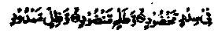
‘Come out, blessed soul, to the thornless lote-trees, and banana-trees growing layer upon layer, and cool spreading shades, and water gushing forth.” (The reference is to the scenes of Jannah described in) these Ayaat (Waqi'ah. (28 -37),
The Angel of Death speaks kindly to him, like a mother speaking to her child. For, he knows that the soul is a favourite of Allah Ta'ala and that, if he treats it kindly, Allah Ta'ala will be pleased with him (the angel). So, the soul is taken out of the body with perfect ease, like pulling a hair out of the dough; and when the soul departs from the body, all the Angels greet it and give glad tidings of entry into Jannah. The Holy Qur’an described the scene of a Mo’min’s meeting with death in the following Ayaat
Those whom the angels cause to die (in a state of purity), saying to them, ‘Peace be unto you. Enter Jannah because of what you used to do. (an-Nahl; 32)
If the man is a favourite servant of Allah Ta'ala, he is treated as:
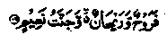
'If he is of those brought nigh (unto Allah), Then, rest and pure sustenance and a Garden of delight. (al-Waqi‘ah: 88-89)
The departing soul says to the body, "May Allah Ta'ala bless you with the best of rewards! For, you were always quick to obey Allah Ta'ala and to perform acts of devotion; always anxious to avoid disobedience. I congratulate you on this day,for, you have been saved from punishment and you have also saved me". The body also speaks the same words to the soul when it is about to depart The places where he was accustomed to worship Allah Ta'ala, weep over separation from him the gates of Heaven through which his good deeds used to ascend, and the gates through which his provision used to descend, also weep for him. After this, the five hundred angels gather around the deceased body and, when the people who are washing the body turn it from side to side, the angels turn it over even before them; when they begin to shroud him, the angels shroud him in the clothes of Jannah even before them; when they put perfume on his body, the angels put on it the perfume of Jannah, even before them. Then, the angels stand in two rows stretching from his house-door to the grave, and receive the bier, invoking Allah’s blessings and forgiveness for the deceased. When Shaitan (the devil) sees this spectacle, he wails and cries so bitterly that his bones begin to ache and he says to his disciples, ‘Woe to you! How did this man escape you?" They reply that he was infallible. After this, the angel of death escorts the soul to the heavens above, where it is received by Jibrael Alaihissalam, in company with seventy thousand angels, each one of whom gives him glad tidings of a favour from Allah Ta'ala. Then the Angel of Death accompanies the soul to the ‘Arch’ (The throne) of Allah Ta'ala and, on reaching there, it lies prostrate (in Sajdah) before Allah Ta'ala, Who says,
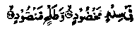
"Take the soul of my servant to the thornless lote-trees mid clusters of banana-trees". (al-Waaqi'ah: 28-29).
When the body (of the deceased) is laid to rest in the grave, the Salaat that he used to observe stands on his right side, the Fasts stand on his left, his Recitation from the Holy Qur’an and Zikr stand above his head, the steps that he used to take while going for congregational Salaat stand by his feet, and the patience that he observed (in afflictions or while resisting evil temptations) stands in a corner of the grave. So, when the Retribution enters the grave and stretches its neck to attack the deceased from the right side, the Salaat says to it, "Get away! By Allah! The poor fellow has been through much suffering in his life and he has just gone to sleep!" Then Retribution tries to approach him from the left side, but the ’ Fasts push it away; and' then it tries to go from the head, but the Recitation and ’Zikr’ (Remembrance of Allah) prevent it from advancing, saying, "You cannot go this way”. In short, from whichever side punishment may approach, it finds its way’blocked by one of the good deeds surrounding the friend of Allah on all sides. So, the punishment, recedes defeated and dismayed. Now patience, which has been standing in’a corner, says to these virtues, “I stood waiting; for I meant to assist you in repelling the punishment, if I found any side weak or inadequately guarded. Allah be praised! You have escaped punishment, all by yourselves. Now, I shall help him on the Day when the balance is set up for weighing the deeds of men’
After this, two angels come to the deceased: their eyes shine like lightening; their voices are like rumbling thunder, their molar teeth, like the horns of a cow; flames of fire rise from their mouths as they breathe; they have long hair falling to their feet; the distance between their shoulders is such that it can only be traversed in many days; they are far from being lenient or kind to men. Though they do not treat the Mo’mineen harshly, their very appearance is repulsive and horrible. They are called ‘Munkar’ and'Nakeer’. Each one of them is carrying a big hammer, so heavy that all the men and the Jinns of the world together cannot lift it. They command the man to sit up and he sits up instantly, while the shroud slips from his head and foils to his hips. Then they ask him, "Who is your Lord? What is your religion? What is the name of your Nabi?’. He replies, "My Lord is Allah, of Great Majesty! He is One, with no partner in His Oneness, the sole Sovereign of all, Who has no rival. My religion is Islam and my Nabi is Muhammad Sallallaho alaihe wasallam, who is the last of all the Ambiya (the seal of Nabies)" The angels then say to him, "You have spoken the truth"! They push away the walls of the grave, which expands above him, on his right side and on his left, in the direction of his head and in the direction of his feet........becoming spacious on all sides. Then the angels say to him, "Raise your head". He does so and sees before him a door through which Jannah is made visible to him. They say to him, ‘O friend of Allah, this is your resting place; for,you have been a devout servant of Allah Ta'ala? Rasulullah (Sallallaho alaihe wasallam) has said, "By Him, Who holds my soul in His hands, at this moment, the ’ Mo’min experiences an ecstasy of joy that will never return’. Then the angels ask him to look towards his feet He does so and sees a door opening into Jahannam (and some of its horrors are made visible to him). They say to him, "O! Friend of Allah, you have been saved from entering (Jahannam) by this door’. Again, he experiences such an ecstasy as will never return. Then seventy seven gates are opened in his grave for him into Jannah, so that its fragrance comes to him and its cool breezes are blown in upon him. And this will last till the Day of Resurrection.
Now we shall describe what happens to the non-believers and the profligate when they are on the point of death. Allah Ta'ala says to the Angel of Death, “Go to My enemy (so and so) and bring forth his soul. I granted him plenty of everything and showered My bounties upon him from all sides, but he did not desist from disobeying Me. Let Me punish him this day. So, the Angel of Death comes to him in the most horrible form, with twelve eyes and carrying a sledge hammer made from the Fire of Jahannam, all covered with sharp-pointed thorns. He has five hundred Angels under his command. They bring with them a big copper-blade and each one of them is carrying big live coals and fiery whips made from the Fire of Jahannam--all blazing hot As soon as the Angel of death reaches there, he strikes the man with the sledge-hammer, the thorns whereof pierce and penetrate to every vein and every joint of his body. And then he pulls out the hammer with full force. All the other Angels begin to strike him with the whips, on his face and on the hips. They go on whipping him till he swoons. After that they drag forth his soul from the toes and bring it to the heels, all the time whipping and beating him. They pause for a while and then pull it to the knees and from there, after another pause, bring it up to the stomach. (They draw it out little by little, in order to keep it in the agony of death for a longer time). And from the stomach,they drag it up to the breast. Then they put the copper-blade and the burning coals under his chin. The Angel of Death says to him, "Come out, cursed soul and proceed to Jahannam":.
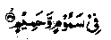
In scorching winds and scalding water and shadows of black smoke, neither cool nor refreshing (but extremely painful). (al-Waqi'ah: 42-44)
And when the soul departs, it says to the body, "May Allah punish you with the worst retribution! For, you always hastened to transgress the Commandments of Allah Ta'ala and were always slow to perform acts of devotion; you have ruined yourself and also caused my ruin". The body also speaks the same words to the soul. And those parts of the earth, where he used to commit sins against Allah Ta'ala, curse him. The legions of Shaitan’s disciples come running to him and say,“Glad tidings to you, our lord, for we have sent a soul to Jahannam" And when his dead body is laid in the grave, the earth doses in upon him so that his ribs are crushed together and run into one another. Then black dragons start biting and stinging him, some of them beginning with his nose and going down to the waist, others beginning with the big toe and coming up to the waist, till they all meet in the middle of the body.
The two angels, called ‘Munkar’ and ‘Nakeer’ come to him and ask, ‘Who is your Lord?' What is your religion? Who is your Nabi?” But to each question that they ask, he replies,‘I do not know,’ And each time he says so, they beat him with the hammer so violently that the grave is filled with sparks flying off from the hammer, all scattered about. Then, the angels command him to look up; he does so and sees a door opening into Jannah, through which some of its beauty and luxuriance is made visible to him. They say to him, "O enemy of Allah, this could have been your abode, had you been obedient to your Lord". Rasulullah Sallallaho alaihe wasallam, has declared,"By Him Who holds my soul in His Hands, the dead man feels such deep remorse, at this time, as will never be experienced by him again". Then a door is opened for him into Jahannam and the angels say to him, ‘O enemy of Allah! ‘This is your abode,for you have been disobedient to Allah Ta‘ala. After this, seventy-seven gates are opened for him into Jahannam, through which the black smoke and scorching winds of Jahannam will continue to blow in upon him, till the Day of Resurrection.’
The spectacle of death and that of punishment in the grave should always be kept in mind for, it is the most horrible spectacle. There are many other Ahadith which describe the scene of death and the circumstances of the grave, but we have quoted only the above Hadith..
The great scholars of Ahadith have criticised the Isnad’ (line of transmission) of this Hadith, but its subject-matter is corroborated by so many other Ahadith. (Ithaaf) Particularly, the Ahadith transmitted in Mishkaat on the authority of Baraa Ibne ‘Aazib Radhiallaho anho and on the authority of Abu Hurairah Radhiallaho anho in the Chapter‘On the confirmation of the punishment in the grave’ and in the ‘Book of Funerals’, are very similar to this Hadith, in content An Urdu translation of all these Ahadith can be seen in the book entitled Mazahir-e-Haqq for the sake of brevity. Aishah Radhiallaho anha says, "Woe upon the sinners among the inmates of the graves! For, black dragons are given power over them and they bite and sting them, one beginning with the head of the man and coming down to his waist, the other beginning with the feet and going up to the waist, till they meet in the middle of the body!’ It is, indeed, the retribution in the grave that has been given the name of punishment of'Barzakh’ (intermediary world) in the following Ayaat of the Holy Qur’an:
And behind them is a ‘Barzakh’ (partition) till the Day when they are raised. (al-Mu’minun: 100)
Therefore whenever Uthman Radhiallaho anho made mention of the grave, he wept so bitterly that his beard became wet with tears. And Rasulullah Sallallaho alaihe wasallam, even though (himself) righteous and absolutely immaculate, constantly sought the protection of Allah from the punishment in the grave, so that people should follow his example and make a habit of frequently seeking protection of Allah from this retribution (in the grave). For the same reason, Rasulullah Sallallaho alaihe wasallam said, "Were it not that you would cease to bury your dead ones, on account of fear, I would ask Allah Ta'ala to let you hear the punishment in the grave? (This Hadith has been quoted above). As a matter of fact, the retribution is dictated by the demands of justice. For, man has been sent to this world for the sole purpose of obeying Allah Ta'ala and He has, after recounting His favours to man (in the form of physical powers or worldly fortunes), reminded him again and again, in the Holy Qur’an, that he has been sent to this world solely for obedience to Allah Ta'ala, viz.
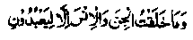
I created the jinn and the humankind only that they might worship Me. (Az Zariyaat: 56)
And, He has also warned man that the life has been granted to him only for a test and a trial to see how he behaves himself after receiving all these bounties, the hour of death being the time of announcement of the result of this trial. Says Allah Ta ala in the Holy Qur’an:
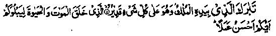
Blessed is He in Whose Hand is the Sovereignty and He is Able to do all things. Who has created life and death that He may try you, which of you is best in conduct' (al-Mulk: 1-2).
Doubtless’the world is an abode of trial, the underlying reason for creating the jinn and the humankind is that Allah Ta'ala wants them to obey Him, and all the pleasurable things, amenities and necessities of life, have been granted to men so that they should use them to fulfill their dire needs and spend the rest for the cause of Allah Ta'ala, which goes to their own ultimate credit, being (as it were), deposited in the Treasury of Allah Ta'ala. Therefore, it is sheer heedlessness, culminating in utter loss and remorse, on our part to indulge in worldly activities to the extent of neglecting the Commandments of Allah Ta'ala, forgetting the purpose of our creation and taking no thought as to why these bounties have been granted. And one feels real sorrow and compunction when the time comes for him to part with all his wealth, hard-earned and saved up with stringency in spending on ones personal needs, leaving it for others and pass away, empty-handed, into the Next World. If we possess a little bit of sense, let us resort to a lonely place and contemplate, for a brief moment, what our fate would be if the Angel of Death came to us unaware at this very moment, and what would become of the wealth and property, earned and hoarded after long years of labour.
Wahb Bin Munabbah Rahmatullah alaihe has narrated the following story: "A king once decided to tour his dominions and survey his kingdom. He ordered out his stately robes and was presented a suit, but it did not please his fancy. He called for another, and still another and, after rejecting so many, found one that was to his liking. He wore this most elegant suit, and ordered his horse. A fine horse was brought, but he did not like it and sent it back. Then two more horses were presented to him, one after the other, but he did not like them either. At last, the whole stable of riding-horses was brought before him and he selected the best steed. The king then mounted the horse. The accursed Shaitan infused pride and vanity into his mind and he rode off proudly, followed by his courtiers, attendants and armed-men, in a mighty cavalcade. But the king was too full of disdain to take notice of them. As he rode on, he came upon a decrepit old man, dressed in rags, who greeted him, but the king paid no attention. At this, the ragged man took hold of the horse’s bridle. The king flew into a rage and said to him threateningly, Off with you! How dare you catch hold of my horse’s reins?' The man said, I have some business with you’. Tie king said, ‘Be patient and wait till I come back and dismount; for, then I shall have time to listen to what you have to say’. The man said, T must say it just now’ and saying this, he gave a violent tug to the bridle and snatched it away. The king said, “Well, what do you want to say?” The man said, Ht is a secret; I must whisper it in your ears’. The king bowed his head and the man whispered into his ears, I am Izraeel, (the Angel of Death), come to take your soul’. And then, of course, the king turned pale and his voice quavered, and he said in a faltering voice, ‘Could you give me a brief respite, to go home, meet my people and arrange my affair The angel said, ‘No, you shall have no respite. Never again shall you meet your kinsmen or see your possessions’. Saying this, the angel pulled out the soul from his body and he fell down from the horse like a log of dry wood.
"After this, the Angel of Death went to a pious Mo’min (Believer) who was also going on a journey. He greeted the man saying, ‘Assalaam-o-Alaikum’ (peace be upon you!) and the man returned, ‘Wa'Alaikum-us-Salaam’ (And upon you be peace!). The angel then said to him, T want to say something into your ear’. The Angel whispered into his ears, ‘I am Izraeel the Angel of Death’. The man said, ‘Most welcome! Blessed is your visit’ For, you have come after I have waited so long. Of all the persons who are far away from me, you are the one I was most anxious to see’. The angel said,“Go and hasten to do the task for which you have undertaken the journey”. The man said, I would dearly love to meet my Allah, more than anything else in the world’. The angel said, "Choose for yourself any state in which you would like to meet death and I shall draw out your soul when you are in that state." The man said, “I leave it to your choice”. The angel said, "I have been commanded to do as you please". The man said, "If so, let me take Wudhu (ablution) and stand in Salaat; when I lie prostrate (in Sajdah) before my Lord, you can pull out the spirit from my body". So, the pious man was engaged in Salaat, lying in Sajdah, when his soul was taken out of the body. (Ihyaa).
It was one of the numerous favours of Allah Ta'ala to the humble author of this book (who considers himself to be the most insignificant person) that his eldest daughter (who was the privileged wife of his illustrious cousin, Maulana Muhammad Yousuf (May Allah increase his virtues), also passed away to the Mercy of Allah Ta'ala when she was in Sajdah. She had been ill for a long time and was too weak even to sit up in bed for Salaat. She, therefore, used to make gestures instead of performing Ruku’ or Sajdah etc. On Monday night, the 29th of Shawwaal, 1366 A.H, she was performing Maghrib Salaat, and was in the state of Sajdah when her soul parted to meet her Lord and Creator. This humble author is incapable of expressing gratitude to Allah Ta'ala for His innumerable favours to him.
Maulana Muhammad Yousuf (Rahmatullah alaihe) also passed away to the Mercy of Allah Ta'ala on 29th Zul-qa’dah; 1384. A.H. in Lahore.
Abu Bakr Ibne Abdullah Muzani Rahmatullah alaihe narrates, "When the hour of death drew near for a wealthy person from among the Bani Israel, who had hoarded a lot of wealth, he said to his sons,“Bring forth all my belongings before me” So, all his possessions were hurriedly brought before him; there were numerous horses, camels, slaves and plenty of wealth. When he looked at these things, he began to weep and cry in bitter sorrow, for he knew that he was going to part with all this. Meanwhile Izraeel alaihissalam appeared before him and said, ‘It’s no use weeping at this moment. By Him who granted you all these bounties, I must take your soul away’. The man said, ‘Could you grant me a short respite so that I might distribute all these things’. The angel said,"! am afraid, no respite can be granted now! You should have distributed your things before this hour.’ Saying this, he pulled out the soul from the man’s body".
Another such story is related of a person who amassed great wealth and provided for himself all manners of comforts and constructed a grand palace, with two entrances, on each of which he appointed a guard of his slaves. He arranged a sumptuous feast to, celebrate his moving into the new palace, to which he invited all hist friends and kinsmen. When the company sat to dinner, he himself was seated comfortably on a grand throne and was saying to himself, ‘I have a good stock of everything to last for years and I won’t need to buy anything”. As he sat there, musing on his own sufficiency, a ragged old man, with the beggar’s gourd hanging in a sling round his neck, appeared at the gate outside and began to knock at the door. So loud was the knocking that the sound disturbed the rich man sitting on the throne. The slaves rushed to the door, wondering who this discourteous old man could be. They asked him what he wanted and the old man said, “Send your master to me’. They said, “Do you think our master would come out of his palace to receive a beggar like you?” The man said,‘He will come, go and tell him’ They went to their master and told him about it. The rich man said, “Why did n’t you teach him a lesson, for his impudence?’ As he said so, there was a still louder knock at the door and the door men rushed to the gate. The old man said, “Tell your master that I am Izraeel, the angel of death’.’ Hearing this, the servants were stupefied and, when the rich man was told about it, he was stunned and implored in utter humility,“Ask him to take the life of someone else as ransom for my own’ But the angel, who had meanwhile entered the palace, said to him, “Do what you will, I cannot go back until I have taken the soul out of your body’ The rich man gathered all his Wealth and said, ‘Curses upon you, you damned wealth! You kept me too busy to worship my Lord and left me no time to concentrate on the remembrance of Allah” Allah Ta'ala in His Infinite Power, granted his wealth the power to speak and it said to him, “Why do you curse me? It was on account of my being in your possession that you were granted entry into the courts of great emperors during the hours when the poor ones were driven away from their doors. It was on my account that you associated with delicate damsels and derived sensual pleasures, living in luxury like royalty. Ah! you spent me on unlawful things and I was helpless in your hands. Had you spent me on noble needs, I would have benefited you.’ And, in the midst of this dialogue, the Angel of Death suddenly pulled out the soul from his body.
Wahb bin Munabbih Rahmatullah alaihe says, "Once, Izraeel Alaihissalam took away the soul of a mighty tyrant, the like of whom the world had never seen. As he was carrying the soul, he passed by some angels who asked him, ‘Have you ever felt pity for any person whose soul you were commanded to pull out?’ The Angel of Death replied, Yes, once I was moved to great pity when commanded to take the soul of a woman who was all alone in a jungle and had just given birth to a baby son. When I was taking out her soul, I was filled with pity for her and her new-born child, for, I did not know what would happen to the innocent baby left alone in that wilderness! The angels said,“Do you know who this tyrant is whose soul you are carrying now? It’s the same child who was left alone.’ The remark greatly surprised the Angel of Death, who exclaimed, “Glorified be Thou,O Lord! Thou art beyond all imperfections! Most Kind and Most Merciful! And Thou doest as Thou willest.’
Hasan Basri Rahmatullah alaihe says, 'When a person dies and members of his household begin to weep and cry, the Angel of Death stands in the doorway and, addresses them, "I did not deprive him of his livelihood (he has already exhausted his decreed portion), I did not cut short his life time. I have been commanded to visit this house again and again, until none of its inmates is left alive". Hasan Rahmatullah alaihe says, "By Allah! If the mourners could see the Angel at that time and listen to his talk, they would forget about the deceased and start worrying about themselves".
Yazid Raqqaashi Rahmatullah alaihe has narrated the following story,"Once a cruel person of Banu Israel was sitting in privacy with his wife when he saw a stranger entering his house through the door and coming straight towards him. The man flew into a rage and rushed towards the stranger asking, ‘Who are you and who gave you permission to enter my house?’ The stranger replied, ‘The Owner of the house commanded me to visit you and I am a person whom nothing can prevent from Entering a house, nor do I need permission before entering the palaces of kings. I am not awed by tyrants, nor can anything prevent me from meeting those who are proud, vain or self conceited' On hearing this,the man was seized with sudden fear, a shudder ran through his body and he fell upon his face. At last he said in abject humility, 'That means you are the Angel of Death’. The stranger said, ‘Yes, I am the Angel of Death’. The man said, ‘Could you give me a brief respite, so that I might write out my will?’ The Angel said, 'It is too late now; It is a pity that you have exhausted your lifetime and taken the exact number of breaths apportioned to you, under the Divine Decree. Your end has come and it cannot be delayed even for a moment’. The man asked, Where are you going to take me?’ The Angel replied, ‘You shall be in the company of your own deeds that you have sent forth to the Akhirah. And you will get an abode in the Akhirah, which you have built for yourself, with the help of your own deeds.' The man said, ‘I never performed good deeds, to deserve a good abode in the Next World.’ The angel said, ‘Then, I shall take you to:
The fire of Jahannam; eager to roast the skin; it will call forth the one who turned and fled (from truth in this world)! (al-Ma‘aarij: 15-17)
Saying this, the angel dragged forth the soul from his body and everybody in the house began to wail and cry aloud.'Yazid Raqqashi Rahmatullah alaihe adds, "If people knew what happens to a person when he is in the throes of death, they would weep more bitterly on his suffering than on their own loss’ (Ihyaa). - Sufyan Thauri Rahmatullah alaihe says, "When the Angel of Death touches the heart-vein of the dying man, he ceases to recognize people, cannot speak and forgets about everything of the world. At this moment, were it not for the shock of death-pangs, he would take a sword and attack those sitting around him in the frenzy of severe pain.'Some Ahadith have it that, when the soul of a dying man comes up to his throat, Shaitan tries his best to lead him astray and rob him of his faith. A Hadith says that Izraeel alaihissalaam visits people during the hours of Salaat, notices them and keeps track of them; and, when the hour of death comes for anyone of those who have been particular about the timely performance of Salaat, he himself prompts him to recite the Kalimah and drives the Shaitan away from him. Mujahid Rahmatullah alaihe says, "When a person is about to die, the faces of his friends and companions are made visible to him, if he used to associate with men of piety, he finds himself in company with the pious; and if he associated with the wicked and the profligate, he finds himself among such people". Yazid bin Shajarah Radhiallaho anho has also related a Hadith to the same effect Rabi‘bin Bazah Rahmatullah alaihe, who was a devout and pious man living in Basrah, has related that, “Once a person was about to die and people were reciting the Kalimah, Laa Daaha Illallaho ()
prompting him to recite it with them. But all he could' say was, ‘Have one (a glass of wine) for yourself and let me have one! Have one for yourself, let me have one........." Similarly, there was another person in Ahwaz who, when at the point of death, was prompted to recite the Kalimah,‘Laa Ilaaha Illallaho’ (), but he went on crying out, “Ten rupees a piece, eleven rupees a piece, twelve rupees a piece...'.’(Ithaaf)
On the other hand, there have been many beings who kept death constantly in remembrance, prepared for it and performed great deeds of virtue for the life of Akhirah. They received death like a person receiving a gift, as a Hadith says: “Death is a gift to a Mo’min”. When the hour of death drew near for Bilal Radhiallaho anho, his wife said, "Alas Alas! You are departing"! But Bilal Radhiallaho anho said, "What a bliss it is to die! For tomorrow we shall meet our loved ones, Muhammad Sallallaho alaihe wasallam and his companions. When the time of death came near for Miraaz Radhiallaho anho, he said, "O Allah! Thou knowest that I wished to live long, not because I loved this world or wanted to dig canals and plant gardens. In fact, I longed to fast and remain thirsty during the hot summer afternoons; I loved to face hardships and strive for the cause of Deen and to associate with those who remember Thee and make ‘Zikr’ in their company." Salman Radhiallaho anho began to weep and cry when he was at the point of death. Someone said to him," What makes you cry? When you die, you will meet Rasulullah Sallallaho alaihe wasallam, who expressed his appreciation for you when he breathed his last." Salman Radhiallaho anho replied, “I am not weeping for fear of death, nor because I am leaving the world. What makes me cry is that we made a covenant with Rasulullah Sallallaho alaihe wasallam that we would use things of this world in the manner of a traveller who keeps the bare minimum to last him during the journey, but I am afraid I have not been able to live up to the instructions". Yet when he died, he was found to possess what amounted to ten Dirhams. Just imagine; This was all he possessed in the world, which he considered to be an excess. He then called for some musk, asked his wife to mix it with water and sprinkle it on his bed for, he said, “I am expecting a party of visitors who are neither men nor jinns”. (Ithaaf)
When the last hour came for Sheikh Abdullah Ibne Mubarak Rahmatullah alaihe, he was smiling and said,
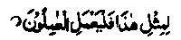
’For the like of this, then, let the workers work”. (as-Saffat: 61)
(He might have glimpsed some of the bounties and joys of Jannah). It is also said that, when the Sheikh was at the'point of death, he said to his servant named Nasar, "Lay my head on the ground’. The servant began to cry. The Sheikh asked him, "What makes you cry?" and he replied, "It grieves me because you lived in comfort but you are dying like a beggar, with your head lying on the ground! "The Sheikh said, "Say no more! For, I supplicated Allah Ta'ala to grant me life as a rich man and cause me to die like the poor.' Ataa bin Yasaar Rahmatullah alaihe says: '’ A person was about to die when Shaitan came and said to him, You have escaped my snares’. The man said, ‘I still do not feel secure from your evil designs ’. Jariri Rahmatullah alaihe says that he was present when Sheikh Junaid Rahmatullah alaihe was in the throes of death and he saw that the Sheikh was reciting Ayaat from the Holy Qur’an. Some one asked him, "Is it the time to recite from the Holy Qur’an?" (He meant that the Sheikh was very weak and was experiencing difficulty in recitation). The Sheikh replied, "What time can be more opportune for recitation? At this hour, my Book of Deeds is being completed. (I would like its last entry to be the Ayaat of the Holy Qur’an)!’
Someone asked Junaid Rahmatullah alaihe, "How was it that Abu Sa'eed Khazzaaz Rahmatullah alaihe was in such joy at the point of death?" Junaid Rahmatullah alaihe replied, "He was so fond of meeting his Lord that one could expect his soul to fly to heavens even before the time of death to meet his Lord." When the last hour came for Zun-Nun Misri Rahmatullah alaihe, someone asked him if he had any wish. The Sheikh replied, “My only wish is that I should attain a true knowledge (Ma'rifat) of Allah Ta'ala’. A man narrates: "I was sitting in company with Sheikh Mamshaad Dinavari Rahmatullah,.’ alaihe when a Dervish came to him and said, ‘Is there any neat, clean spot nearby where a poor man could meet his end?'The Sheikh pointed to a' place where there was a spring of fresh water. The man went there, took Wudhu (ablution) and observed his Salaat. When he finished, he laid himself down full length on the ground and breathed his last"
Fatimah Rahmatullah alaihe. relates that when her brother, Abu Ali Rudbari Rahmatullah alaihe was about to die, his head was in her lap. She says that he opened his eyes and said, "The gates of heaven have been opened and Jannah has been decorated. I can hear someone saying, ‘Abu Ali, you did not aspire to attain high grades in Jannah, but We have granted you high grades." He then recited two couplets, meaning: By Thy right over me, never did I turn my eyes away from Thee, to look (lovingly) at anyone other than Thee; when I see Thy beauteous Countenance flushed with modesty, I become restless for Thee. ’’ When Sheikh Junaid Rahmatullah alaihe was at the point of death, someone recited to him the Kalimah, ‘Laa Ilaaha Illallaho,(). He said, "I have never been forgetful of this Kalimah, so I don’t need to be reminded of it at this hour’!
Ja'far bin Nasir Rahmatullah alaihe asked Bakran Dinwari Rahmatullah alaihe- the privileged disciple in attendance of Shibli Rahmatullah alaihe, "Could you describe to me the spectacle of Sheikh Shibli’s meeting with death?”Bikran replied, "In the throes of death, I heard him saying, ‘Once I wrongfully took a Dirham (silver-piece) from a person, to atone for which I have given away thousands of Dirhams as Sadaqah on his behalf but, still, my heart is weighed down by the feeling of remorse and consciousness of wrong doing;’ He then said, "Please help me to take Wudhu (ablution)". I made him perform Wudhu but forgot to comb out his beard with the fingers (i.e. perform ‘Khalal’). The Sheikh was too weak to do it himself and, being speechless with pain, he caught my hand and thrust it into his beard; as he did so, his soul departed!"When Ja’far Rahmatullah alaihe heard about it, he began to weep and said, "The Sheikh was ever so particular about the details of the Shariah (Islamic Law) that he insisted on observing a Mustahab (commendable act) in the throes of death?
Sheikh Kattani Rahmatullah alaihe was asked, when he was lying on death-bed, "What devotions have you been practising as a routine"? The Sheikh replied, "If it wasn’t my last hour, I would not tell you about it. The feet is that, for the last forty years, I have been constantly guarding my heart against all that is other than Allah Ta'ala; whenever something other than Allah is about to enter my heart, I close its gates". Sheikh Mu'tamar Rahmatullah alaihe says, I was with Hakam (a nobleman) when he was at the point of death and I was supplicating Allah to make easy for him the throes of death, for he possessed such and such qualities. I was recounting his virtues and invoking Allah’s Mercy for him while he was in a coma. When he came to himself, he said, "Who was speaking such and such words?" When I said that it was I, he said, ‘Izraeel alaihissalaam (the Angel of Death) was telling me that he always treats, gently and kindly, those who are generous’. And with these words on his lips, the Divine gave up his soul.’
When the hour of death drew near for Sheikh Mumshaad Dinawari Rahmatullah alaihe, another saint was sitting with him and supplicating Allah,“O Allah! Grant him entry into Jannah!'The Sheikh smiled and said,“For the last thirty years, Jannah has been presenting itself to me, with all its beauty and adornments. But never have I cared to look at it (because I crave a vision of Allah Ta'ala Who is the Owner of Jannah)"(Ihyaa).
When the hour of death drew near for Khalifah Umar bin Abdul Aziz Rahmatullah alaihe, the physician attending him said, "Amir-ul-Mo’mineen has been poisoned and I am not very hopeful about his survival’Umar bin Abdul Aziz said, “You should not be hopeful either about the life of a person who has not been poisoned". The physician asked, '‘Did you feel the effect of poison before I told you?". Umar bin Abdul Aziz Rahmatullah alaihe said/I came to know of it when the poison went into my stomach". The physician said, ‘Let someone treat and cure you or you will die". Umar Rahmatullah alaihe said, "But my soul will go to my Lord and Sustainer Who is the Best of all whom people should meet. By Allah! Even if I knew that something was lying beside me, which could restore me to health,! would not extend my hand to take it". He then prayed, O Allah! choose Umar for a meeting with you’ and he died a few days after this incident. Maimun bin Mehran Rahmatullah alaihe adds: "During these days, Umar bin Abdul Aziz Rahmatullah alaihe used to supplicate Allah Ta'ala, frequently, to grant him death. Someone said to him, ‘Don’t wish for death; for Allah Ta'ala has revived so many Sunnan (ways of Rasulullah) through your efforts and abolished so many innovations (Bid'aat) that had come into vogue.’ ‘Umar Rahmatullah alaihe said, "Shall I not be like Yousuf Alaihissalaam, the virtuous slave of Allah Ta'ala, who supplicated Allah Ta'ala, thus:
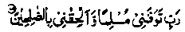
‘O Allah.1 Make me to die submissive (unto Thee), and join me to the righteous!’(Yousuf: 101).
Maslamah Rahmatullah alaihe said to Umar bin Abdul Aziz when he was at the point of death, “The money you gave us for your shroud was just enough to buy some cloth of very inferior quality; please allow us to spend a little bit more". Umar Rahmatullah alaihe desired that the shroud (of the same cloth) should be brought to him. He looked at it for some time and then sa'4, "If my Lord and Sustainer is pleased with me, He will at once order a better shroud for me, if He is not pleased with me, I shall be stripped of the shroud I am wearing and made to wear a fiery shroud of Jahannam". He then asked to be propped up in bed and said while sitting, in an invocation, "O Allah! I could not fulfil Thy commandments and did not desist from doing things forbidden by You; still I declare that there is no god but Allah" (reciting the Kalimah). And with these words on his lips he passed away to the Mercy of Allah. He also said at this hour, T can see an assembly of creatures who are neither human beings nor jinns". Another version adds,” ‘At the last hour, he told people to leave him alone and, after everybody had left, they saw through the chinks of the door that he was saying, ‘Most welcome! Most blessed is the visit of those who are neither human beings nor jinns’. Then he was heard reciting this Verse from the Holy Qur’an:
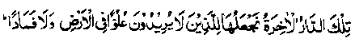
As for that Abode of the Hereafter, We assign it unto those who seek not oppression on the earth, nor yet corruption.(al-Qasas: 83) (Ithaaf)
A Divine says, "I prayed to Allah to reveal to me what happens in the grave. One night,! dreamt that the Day of Resurrection had come and the dead were rising from their graves. I saw that some of them were reclining on couches of rich silk brocade, some were sitting on silken sofas, some were seated on raised thrones and some were lying on flowers; some of them were laughing and others were weeping. I said (in the dream), ‘O Allah! I wish all of them were in the same state! At this, some one said, ‘This discrimination is due to our own deeds (A'maal); those reclining on brocade are men of good behaviour, those on silk cushions are ‘Shuhadaa’ (martyrs); those lying on the flowers are the men who used to fast frequently; those who are laughing are the men who repented of their sins; those who are weeping are the sinners and those raised to positions of honour are the people who loved one another for the sake of Allah Ta'ala.’ (Raudh)
Sheikh Abu Ya'qub Sanusi Rahmatullah alaihe says: One of my disciples came to me and said, "I shall die tomorrow in the afternoon". The following day, the man came to the Holy Masjid at Makkah, observed his Zuhr Salaat, made ‘Tawaaf (circumambulation) of the Holy Ka'bah, then went a little farther away from the Ka‘bah and gave up his soul. I washed his body and arranged his burial. When I laid him in the grave, he opened his eyes. I asked him in surprise, "Is there life after death?" He replied, "I am alive and he who is a true lover of Allah Ta'ala never dies." (Raudh)- Sheikh Ibn-ul-Jalaa Rahmatullah alaihe, who is a well-known Sufi Sheikh, says that when his father died and his body was laid on a wooden board for washing, he (the Sheikh’s father) began to laugh. The people who had come to wash his body were terrified (to see a dead man laughing) and ran away. After a whiles one of his father’s friends came and bathed him. (Raudh)
In his book entitled ‘al-Isti‘aab’, Hafiz Ibnu Abdil Barr Rahmatullah alaihe has related some anecdotes about the pious beings who were heard talking after their death. He writes about Zaid bin Kharijah Radhiallaho anho: ‘The Divines are agreed about the fact that he talked after his death. He also relates that some other Sahabah talked after their death.
When the Sahabah were going out on the expedition to Mu’tah, people began to pray for their safe return after the enterprise. On this occasion, Abdullah bin Rawaha Radhiallaho anho recited three couplets which meant:
Safe return? Oh, no!
I would rather my Lord granted me forgiveness;
And with this a mighty blow of the sword,
That cleaves my body asunder!
Or a pike pierced through my body,
That should cut through the liver and the entrails.
Thus would I love to die a martyr in the path of Allah.
On reaching the battle-field, the Sahabah Radhiallaho anhum learned that the enemy was advancing with a formidable army of two hundred thousand soldiers, against their own small army numbering three thousand. So, the Sahabah held a ‘Mashwarah’ (consultation) and decided that Rasulullah Sallallaho alaihe wasallam should be informed of the situation and, if he still commanded them to fight, they would start the battle. When Abdullah bin Rawaha Radhiallaho anho learnt this, he came and said to his companions, “How strange! You are holding consultation to decide whether or not we should receive an honour that we were so anxious to attain. We came here merely to win the honour of Shahadat, we have never fought battles relying on our physical power, the force of weapons or the weight of numbers; we have always fought on the strength of our faith in Islam, our religion. Rise, my friends, and let us go forward to the field of battle; we are sure to win one of the two triumphs, victory or ‘Shahadat and, for us; both are equally glorious". Exhorted by these words, all of them resolved to fight and the battle started. Before their departure from Madinah, Rasulullah Sallallaho alaihe wasallam had appointed Zaid bin Hanthah Radhiallaho anho as their commander (Ameer) and said; "If Zaid is killed, Ja‘far bin Abi Taalib will be your ‘Ameer’ If Jafar is killed, Abdullah Bin Rawaha will be your Ameer and if he is also killed, the Muslims should appoint one of themselves their ‘Ameer’, by mutual consultation'. So, when Zaid Radhiallaho anho and Ja'far Radhiallaho anho had been killed, one after the other, people called out Abdullah’s name, for, it was now his turn to command. At that time, he was on the outskirts of the army, with a piece of baked meat in his hands, for, he had not been able to taste any food for three days. Someone told him that Ja'far had been killed, at this Abdullah bin Rawaha Radhiallaho anho began to scold himself, saying, "You are still busy with the world (taking food)!"He then threw away the piece of meat, took the flag and fell upon the enemy lines. Someone struck him a blow with the sword that cut off one of his fingers. He chanted three couplets, meaning:
O, You are nothing but a little finger cut off!
Is there anything else the matter?
And what has happened? You have come in the path of Allah; Which is, indeed, a great honour and a blessing!
"O Abdullah (addressing himself), if you do not die a martyr, You must die any how, for,there is no escape from death. Look! There looking you in the face is Shahadab, Your long-coveted honour!
If you go forward and embrace martyrdom, Even as Zaid and Ja'far did,
You will be among those who are truly guided;
And if you shrink back, you will be among the wretched."
He then addressed his own heart and said, "O heart, what makes you hesitate? Is it the love of your wife? If so, I divorce her this very moment. Is it your slaves; I set them all free. Is it your garden? I give it away as Sadaqah. Don’t you love to enter Jannah? By Allah! You will have to go forward, willingly or unwillingly! You have long been in peace and comforts of life. And now you hesitate! Just think of your own reality! Wasn’t there a time when you were just a drop of fluid?" After exhorting himself in this manner, Abdullah Radhiallaho anho made a brave attack on the enemy and laid down his life as a martyr. (We have given a detailed account of this expedition in the ‘Stories of the Sahabah’, together with many other stories on the same subject).
When the hour of death came for Abu Sufyan bin Al-Harith Radhiallaho anho who was the son of a paternal uncle of Rasulullah Sallallaho alaihe wasallam, men of his household began to weep and cry. He said, "Do not weep for one (meaning himself) who, since he embraced Islam, has never committed a sin with his tongue, nor done any wrong with his body." (For such a person, death is an experience of extreme felicity). Sunabihi Rahmatullah alaihe relates, "I was with Ubadah Radhiallaho anho when the time drew near for him to die and I was moved to tears. He looked at me and said, ‘What makes you weep? By Allah! If I am called to testify for you on the Day of Resurrection, I shall give the best evidence in your favour, If I get permission,! shall intercede for you and try to do as much as I can for your benefit’ He then added: ‘I have transmitted to you all that I heard from Rasulullah Sallallaho alaihe wasallam, which I considered beneficial for you, except for one Hadith, which I am going to relate to you now that I am leaving, this world. I have heard Rasulullah Sallallaho alaihe wasallam saying, ‘If anyone testifies sincerely; "There is no God but Allah and that Muhammad is the Rasul of Allah", he will be declared immune from the Fire of Jahannam". When Abu Bakr Radhiallaho anho was at the point of death, his daughter began to weep and cry. He soothed her saying, "Do not cry, my dear child". She said, "Dear father, if I do not weep to see you dying, whose death can move me to tears?" Abu Bakr Radhiallaho anho said, "At this hour, I would dearly love to have my soul taken out, rather than that of any other living thing, even though it were as insignificant as a fly." He then said to Hamran, "Still I feel afraid, lest I should fail to keep hold of Islam, at the time of death’'.
When the time drew near for Sa‘d bin Abi Waqqaas Radhiallaho anho to die, he said to the people around him, "Bring me my woollen cloak". When it was brought, he saw that it was old and worn out. Sa‘d Radhiallaho anho said, "When I die, shroud me in this cloak,for, I was wearing it when I fought in the battle of Badr". When the hour of death came for Abdullah bin Aamir bin Kuraiz Radhiallaho anho and he was in the throes of death, Abdullah Ibne Zubair Radhiallaho anho and Abdullah bin ‘Abbas Radhiallaho anho were staying with him as guests. He said to his men, "My two brothers are fasting. Take care, lest you delay their evening meals owing to my death, and delay their breaking the fast." When Abdullah bin Zubair Radhiallaho anho heard this, he said, "Even the severity of death-pangs could not prevent you from entertaining your guests and showing magnanimity !! When he breathed his last, dinner was being served to his guests.
Amr bin Aus says, "I went to see Utbah bin Abi Sufyan Radhiallaho anho when he was in the throes of death and I heard him saying, "Now that I am leaving this world, let me relate to you a Hadith that was narrated to me by my sister, Umme Habibah Radhiallaho anha. She narrated that she had heard Rasulullah Sallallaho alaihe wasallam saying, ‘If anyone observes twelve Rak‘aats of Nafl Salaat in the forenoon (Dhuhaa) sincerely, for the pleasure of Allah Ta'ala, Allah will build for him a palace in Jannah."’ "It was owing to his devotion to Ahadith, and his zeal for the propagation of Islam, that he related a Hadith even on his deathbed. When Muhammad bin Munkadir Rahmatullah alaihe was in the throes of death, he began to weep. Someone asked him what made him weep and he replied, "I am not weeping because of committing some sin, though I do not remember committing a sin during my entire life,-I am weeping, because I fear that I might have done something that I counted as a trifle, but which was a grievous wrong, in the sight of Allah!" He then recited this Ayat:
And there will appear unto them, from Allah, that which they could never have counted upon. (az-Zumr: 47)
and then said, "My only fear is, lest I may have to free such circumstances as I never anticipated." When Aamir bin Abd-e-Qais Rahmatullah alaihe was in the throes of death, he began to weep. Someone said to him, "You have lived a rigorous life and still, you are crying?" The Sheikh replied, I am not weeping for fear of death nor for the love of the worldly things. I am weeping because, this day, I am going to be deprived of the joy of fasting in hot summer days and the bliss of Tahajjud (standing in Nafl Salaat), in the late hours of cold winter nights". When Hasan Radhiallaho anho was lying on his death-bed, there were some people sitting by him. They asked him for some last words of advice. He said, "I advise you to observe three things. Listen carefully, and leave me alone when I have finished, for, I love to pass away to where I am destined to go, in solitude and perfect peace. He then gave them three pieces of advice: - 1. before advising others to do a thing, start practising it yourself;
2. before forbidding others to do a thing, avoid doing it yourself;
3. remember, every step that you take is either credited for you or against you, for, every step brings you closer to Jannah or to Jahannam. So, before taking a step, think where it is going to carry you.
When Rabi’ Rahmatullah alaihe was going to die, his daughter began to weep. He said, "My dear child, this is no occasion for weeping. You should rather say, What a joy! My father has been granted bountiful rewards on this day’". When Makhool Shami Rahmatullah alaihe was about to die, people saw that he was laughing. They asked, "Is this an occasion for laughing." He said, "Why shouldn’t I laugh? For, I am going away forever, from those whom I wanted to shun and I am hastening to Him in Whom are centred all my expectations". When Hassaan bin Sinan Rahmatullah alaihe was in the throes of death, someone said to him, "You may be experiencing severe pain, at this moment?" The Sheikh replied, "Death has pangs, no doubt, but, at this moment, a Mo’min does not feel the severity of death-pangs, because of the joy that the anticipated meeting with Allah Ta'ala brings to him”.
When the hour of death drew near for Ibne Idrees Rahmatullah alaihe, his daughter began to weep. He said, "Do not cry, my child; I have made four thousand complete readings of the Holy Qur’an in this house". Hasan Ibne Hayye Rahmatullah alaihe says, "I was with my brother, Ali Rahmatullah alaihe, on the night when his soul departed from this world. Once, during the night, he called for water while I was observing Salaat; when I had finished, I brought him a cup of water but he told me that he had already taken water. I asked, in surprise, ‘Who brought you the water? There is no one in the house, except you and me’. He replied, ‘Jibrail alaihissalam, brought me some water, which I drank just before you came, and he was saying to me, ‘You and your brother are with those unto whom Allah Ta'ala has shown favour? (The reference is to the following Ayat from the Holy Qur’an:
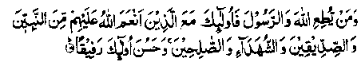
Whoso obeyeth Allah and His Rasul, they are with those unto whom Allah hath shown favour, amongst the Ambiya (Messengers of Allah), the Siddiqeen, and the Shohadaa (martyrs) and the righteous. (an-Nisaa: 69)
Abdullah bin Musaa Rahmatullah alaihe says, "When Ali bin Salih Rahmatullah alaihe died, I was away on a journey. When I came back, I visited his brother, Hasan bin Salih to condole with him. I could not contain myself with grief and began to cry. Hasan said,'‘Let me first tell you how he gave up his soul; for, that might soothe your grief. Just think, how blessed was his hour of death! When he was in the throes of death, he called for water. I brought him some water, but he said to me that he had already taken water. I asked him ‘How?’ and he replied, ‘Rasulullah Sallallaho alaihe wasallam visited me, with a host of angels following him in long rows, and he gave me some water to drink! Fearing, lest he might be talking in a delirium, I asked him, ‘How were the rows of the angels?’ He indicated by a gesture of his hands that they were one above the other". When Sheikh Abu Bakr bin Ayyaash Rahmatullah alaihe was about to die, and his sister began to weep, he said to her, "Do not cry, for, I have made twelve thousand complete readings of the Holy Qur’an in that (pointing to a) corner of the house’.
Amr bin Ubaid Rahmatullah alaihe says: "When Sheikh Abu Shu'aib Salih bin Ziyyad Rahmatullah alaihe was taken ill, I visited him and saw that he was in bed in the throes of death. He said to me, "Happy news! I just saw a stranger with odd looks," and when I asked him who he was, he replied that he was the Angel of Death. I asked him to treat me gently and fie said that he had been commanded to treat me so". The son of Imaam Ahmad bin Hanbal Rahmatullah alaihe says: I was sitting by my father’s side when he was in the throes of death. I had a piece of old cloth in my hands to bind his jaws together after death to keep them in place. He would faint and regain consciousness at short intervals and, when he swooned, we thought that he had expired. Each time he came to himself, he would say, ‘No, no, not yet’. When he repeated the same words for the third time, I asked him what he meant. He replied, "Dear son, don’t you know? The accursed Shaitan is standing beside me, gnawing his finger with rage and sorrow, and telling me that I have escaped from his treachery. I say to him not yeti I still fear his deceit."
When the hour of death drew near for Adam bin Abi Iyaas Rahmatullah alaihe, he was lying in bed, wrapped up in a sheet of cloth, reciting Ayaat of the Holy Qur’an. After completing a full reading of the Holy Qur’an, he said, “I beseech Thee, O Allah, in the name of my love for Thee, that I may be treated gently in the hour of death. O Allah! I cherish good wishes from Thee for this day’! He then recited: "Laa Baha Illallaho," and his soul departed from the body. When Maslamah Ibne Abdul Malik Rahmatullah alaihe was about to die, people saw him weeping. When someone asked what made him weep, he said, I am not weeping because I fear death; for, I have perfect faith in the Mercy of Allah. I am weeping because I participated in Jehaad thirty times, but I was not granted the privilege of Shahadah (Martyrdom) and now I am dying in bed, like women."
One day, Sheikh lyaas bin Qatadah ‘Abshami Rahmatullah alaihe looked into the mirror and saw a few grey hair on his head. He said, "When one’s hair, turn grey, one should not occupy oneself with any pursuit except preparation for the Akhirah. The time has drawn near for me to leave this world." After this, he began to engage himself strenuously in prayers. One Friday afternoon, after he had observed Salaat and was coming out of the Masjid, he looked up into the sky and said, "Most welcome! I have been anxiously waiting for you for a long time!" He then said to his companions, "When I die, take my body to Malhoob (name of a place) and bury me there". After this, he gave up his soul and fell on the ground. When the hour of death came near for Ibrahim bin Hani Rahmatullah alaihe, who was a disciple of Imaam Ahmad bin Hanbal Rahmatullah alaihe, he asked his son, Ishaque, "Has the sun gone down?" He replied, "No, father, the sun has not set yet. But you know that a person, when he is seriously ill, can even break the obligatory (Fardh) fast and you are observing only a Nafl fast Why don’t you break your fast?" Ibrahim Rahmatullah alaihe said, “Just wait". After a short while, he exclaimed (he might have seen something which was invisible to others), "For the like of this, then, let the doers do good deeds". (The reference is to the following Ayaat of the Holy Qur’an:
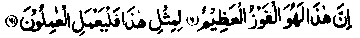
Lo! This is the supreme triumph; For the like of this, then, let the workers work. (as-Safat: 60-61)
After this, his soul departed to the Heavens above. Once, Abu Hakim Heiri Rahmatullah alaihe was sitting and writing; something. Suddenly, he put his pen aside and said, "If this is what they call death, by Allah! It is so pleasant to die’. Saying this, he breathed his last. When Abul-Wafaa bin ‘Aqil Rahmatullah alaihe was about to die, men of his household began to weep. He said, I have been avoiding it for the last fifty years; it (death) cannot be postponed any further. Now leave me alone; I welcome it on its arrival".
One Monday morning, Imaam Ghazali Rahmatullah alaihe, who is famous for his book, Ihyaa-ul-Uloom, performed Wudhu (Ablution) and observed his Fajr Salaat. Then he called for his shroud, kissed it and put it to his eyes. After this he said, "With pleasure I appear before the King-of-kings. Saying this, he lay full length on his back, facing the Qiblah, and passed away to the Infinite Mercy of Allah. Ibn-ul-Jauzi Rahmatullah alaihe says, "When the hour of death drew near for my spiritual mentor, Abu Bakr bin Habib his disciple asked him for a few words of advice. He said, "I advise you to observe three things: (1) fear Allah; (2) meditate on the fear of Allah, in private; (3) fear what I am facing at this moment (death).' He. then added, I have spent sixty one years of my life and, still, I feel as though I had seen nothing of this world’. After this, he asked a person who was sitting by his side, ‘Look, do you see the sweat on my brow?’The man said,"Yes’, and the Sheikh said, I am so grateful to Allah, for, this sweat on the brow is the sign of a person dying with his faith (Imaan) intact (as stated in a Hadith)”. When Abul Waqt Abdul Awwal Rahmatullah alaihe, who was a pupil of Imaam Bukhari Rahmatullah alaihe, was about to die, the last words that he spoke were: ’
"Would that my people knew with what munificence my Lord hath pardoned me and put me among the honoured ones". (Yaa Seen: 26-27)
Muhammad bin Haamid Rahmatullah alaihe says, "I was with Ahmad Ibne Khudrawiahe Rahmatullah alaihe when he was on his death bed. The ninety five year old Sheikh was in the throes of death, when somebody asked him a question. He replied, with tears in his eyes, ‘For the last ninety-five years, I have been knocking at a door, which is now going to open; and I am anxious to know whether it will open on to good or bad fortune for me. I am too much preoccupied to answer any questions at this time’. When his creditors heard that the Sheikh was lying on his deathbed, they gathered round him because his debts amounted to seven hundred Dinars (gold pieces). The Sheikh said, in an invocation to Allah Ta'ala, "O Allah! Thou hast allowed the practice of pledges, as a security for the claims of the creditors. My life was, as it were, a pledge for my creditors and, so long as I lived, they were sure that their claims would be satisfied. Now that Thou art calling back my soul, pay off my debts? He had hardly finished when someone knocked at the door and said, “Where are the creditors of Sheikh Ahmad?" The visitor then settled all their claims and the Sheikh’s soul departed from the body.'
A Sufi Sheikh was at the point of death when he said to his disciple, who was waiting on him, "Bind my hands together and let me lie down with my face touching the ground!" The disciple did so. When the Sheikh said, "The time has come for me to embark on a journey to the unknown; I am not free of the taint of sins, nor do I have any excuse to offer as an apology, nor is there any power to help me". He then exclaimed, repeating his words over and over again, ''Suffice it for me that Thou art mine! Thou alone art mine!" Saying this, he uttered a loud cry and his soul departed from the body. A voice proclaimed from no where, This man showed humility towards his Lord and He accepted it from him”.
A certain man has narrated the story of a saint who was sobbing in the throes of death. His mouth was all covered with flies. The man took pity on him and began to drive away flies from his face. The saint opened his eyes and, staring hard at the man, said, Throughout the long years of my life, I have sought in vain to have one hour of exclusive intimacy with my Lord. Now that I have got it, you have come to veil me from Him. Leave me alone: may Allah bless you".
Abu Bakr Rahmatullah alaihe says that he was with Sheikh Abu Bakr Zaqaaq. In the morning when he was saying, "O Allah! How long art Thou going to detain me in this world?" And the Sheikh died the same day, before Zuhr Salaat. When Makhool Shami Rahmatullah alaihe was taken ill, a visitor said, "May Allah grant you health!" The Sheikh said, "Oh no! To be reunited with Allah, of Whom nothing can be expected but that which is good, is far better than living with the people whose evil may be feared, at all times”.
Abu Ali Rudbari Rahmatullah alaihe says: A poor and ragged old man once came to me on Eid day and said, "Is there any neat clean place around where a poor man could meet his death?" I thought he was not talking sense and said, with unconcern, "Come in, and lie where you like, and give up your soul". The man came in, performed ‘Wudhu’ (ablution) and observed a few Rakaat of Salaat. He then laid on the ground and his soul departed from the body. I washed his body, shrouded him and arranged his burial. When I was going to put him in the grave, I thought that I should uncover his face and lay him on his face, so that Allah Ta'ala might have mercy on him, because of his poverty and for his dying away from his home. As soon as I uncovered his face, he opened his eyes. I asked him in surprise, "My lord, is there life after death"? He replied, “Yes, I am alive and so is everybody who truly loves his Lord. Insha-Allah, I shall intercede for-you on the Day of Resurrection, by virtue of the distinction granted to me by Allah Ta'ala".
Ali Ibne Sahl Asbahani Rahmatullah alaihe used to say to his friends, "Do you think I shall die like common people? Do you think I shall fall ill and people will visit me in bed before I die? Oh no! I shall hear someone calling me by name and I shall depart from the world." And that was what actually happened. One day the SheiKh was going somewhere when he suddenly exclaimed, "At Thy sendee, my Lord (Labbaik),” and his soul departed from the body. Abul Hasan Muzani Rahmatullah alaihe says, "When the hour of death drew near for Sheikh Abu Ya'qub Nahijuri Rahmatullah alaihe, and he was in the throes of death, I began to recite the Kalimah, ‘Laa-Haha-Illallaho’ to him to prompt him to recite it after me. The Sheikh looked at me, smiled and said, ‘Do you think I need to be reminded of this Kalimah? By the Honour of Allah, Who is Enternal, I see Him manifest, but He is veiled from me only by reason of His sublime Majesty and Supreme Power’. And with these words on his lips, his soul departed to meet his Lord". After the Sheikh’s death, Muzani Rahmatullah alaihe used to weep with remorse whenever he recalled this incident He would say to himself,“Shame on you! A wretch like you reminding a Sheikh like Abu Ya'qoob Rahmatullah alaihe to recite the Kalimah at the hour of death!"
Abul Husain Maliki Rahmatullah alaihe says that he associated with Sheikh Khair Nurbaf Rahmatullah alaihe for severe! years. The Sheikh said to him, eight days before his death, I shall die on Thursday evening, at the time of Maghrib Salaat, and I shall be buried on Friday after Jum'ah Salaat". Although die advised me not to forget but, I forgot about it and, on Friday morning, a man told me about the Sheikh’s death. I immediately went to his place to attend his funeral prayers. On the way, I met people coming back from his house who told me that the burial would take place after Jum'ah'Salaat. Nevertheless,! went to his house and asked people the details of the Sheikh’s experience of death. A person, who had remained with him till his last breath, narrated to me that the Sheikh swooned for a while just before Maghrib Salaat. Then he recovered somewhat and said to someone in the corner of the room, who was invisible-to all others, "Stop for a while; you have been commanded to do a thing and I have been commanded to do a thing. That which you are commanded to do (viz. to take my life) will not escape you, but that which I am commanded to do (viz to observe Maghrib Salaat) will escape me. Let me do as I am commanded." He then called for water, made a fresh Wudhu and performed Maghrib Salaat, After this, he laid himself on the bed, dosed his eyes and gave up his life. They say that, on the same night, someone saw him in a dream and asked him, "How are you?" The Sheikh replied, "Do not ask me of. this, but I have gained release from your rotten world." Abu Sa'eed Khazzaaz Rahmatullah alaihe says that he was once staying in Makkah Muazzamah. One day, on coming Out of the Bab-e-Bani Shaibah (a gate), he saw a very handsome man lying dead on the ground. He was looking at his face in surprise,when the dead man opened his eyes, smiled at him and said, "Abu Sa'eed, don’t you know that the friends of Allah (those who love Him truly) do not die; they are just transferred from this world to the next."
When Zun-Noon Misri Rahmatullah alaihe was about to die, someone asked him to give him a word of advice. The Sheikh said, "Do not disturb me at this hour, I am looking in amazement at the wonders of His Infinite Bounty". Abu Uthman Heiri says: "When Abu Hafs Rahmatullah alaihe was in the throes of death, someone asked him to give him one last word of advice. The Sheikh said (or indicated by a gesture) that he was powerless to speak. After a while, he looked relieved and I asked him for a word of counsel, adding that I would convey it to the people. The Sheikh said, "Bow in sincere humility to Allah Ta'ala, for having failed to do what you should have done (This is my last word of advice to you)." Junaid Baghdadi Rahmatullah alaihe says: "I stood above Sheikh Sirri Saqati Rahmatullah alaihe when the last hour drew near for him and he was in the throes of death. With tears dripping from my eyes, I kissed his lips. Wen my tears dropped on his face, the Sheikh said, "Who are you?" I said in humility, "It is your servant, Junaid)!" He said, "Most welcome! It was so good of you to visit me". I asked, "Give me a last word of advice," and the Sheikh replied, "Avoid associating with the evil-doers, and take care, lest your association with others should cause you to be estranged from Allah Ta'ala."
It is said that Sheikh Habib Ajami Rahmatullah alaihe, who is one of the renowned spiritual leaders, looked gravely concerned at’ the time of death. Someone said to him, "It is strange that a Divine like you should feel so disturbed at the hour of death; we have never seen you in such great worry". The Sheikh replied, "The journey (to the Unknown) is far too long for my scanty provisions (the store of virtues). I do not know the way, for, I have not traversed it before. I shall have to face my Lord and Sustainer, the Master of my soul, Whose Countenance I have not seen before. I shall have to see such horrible spectacles as I have never seen before. I shall be laid in the grave under the ground and be there,till the Day of Resurrection, all alone, without any friend or comforter. I shall then be required to appear before Allah Ta'ala for Reckoning and, if I am told to present one act of virtue like the act of reciting ‘Subhaan-Allah,’ once performed during the sixty years of my life, which should be untarnished by the evil influence of Shaitan, I fear that I may not be able to produce one".
The Sheikh was saying so in modesty though, in truth, he had remained least concerned with the world, throughout the sixty years of his life. We should consider how we shall face the reckoning, for, in addition to our preoccupation with the world, we are never free of sins, and most of our actions only please Shaitan. Abdul Jabbaar Rahmatullah alaihe says: I remained under the tutelage of my Sheikh, Fath bin Shakhraf Rahmatullah alaihe for thirty years and, during this period, I never saw him looking up to the sky. One day, he turned his eyes towards the sky and said,I have waited so long, to be reunited with Thee, and I have no patience left in me. O Allah! Call me back to Thyself!.’ And within a week after this incident, the Sheikh passed away, to be reunited with Allah Ta'ala."
Abu Sa'eed Musali Rahmatullah alaihe says, "Fath bin Sa‘eed Rahmatullah alaihe observed his Eid Salaat, on the occasion of Eid-ul-Adhaa, and came back from the place of congregation, rather late in the forenoon. When he was coming back, he saw the smoke rising from the houses where people were cooking the sacrificial meat. He began to weep and said, ‘People have sacrificed animals to gain nearness to Thee. Dear Lord! I wish I knew what to sacrifice for this purpose’'. Saying this, he fainted and fell on the ground. I sprinkled water on his face and, after a while, he recovered and resumed his walk. When he reached the streets of the city, he looked up to the sky and said, ‘Dear Lord, Thou knowest how long L have suffered fr -grief and sorrow, being estranged from Thee. And, Thou knowest how long I have been wandering the streets. My Allah! How long will you detain me in this world, away from Thee??Say-mg this, he fainted again. I sprinkled water on his face and his condition improved. A few days later, the Sheikh breathed his last."
Muhammad bin Qasim Rahmatullah alaihe says, ' My spiritual guide, Sheikh Muhammad bin Aslam Tusi Rahmatullah alaihe said to me, four days before his death, ‘Come, there is good news for you. Allah Ta'ala has done a great favour to your friend (meaning himself). The hour of my death has drawn near and, as a special favour of Allah Ta'ala, I do not own a single Dirham to be accounted for on the Day of Resurrection. Now shut the door of my room and do not let anyone come near me till I die. And remember that I have no possessions to bother you about the distribution of my inheritance. My sole property consists of this sheet of cloth, a piece of rug, a container of water for ‘Wudhu’ (ablution) and my books, all of which you can see here. And there are thirty Dirhams in this bag, which do not belong to me, but are the property of my son, given to him by a relative of his. What can be more lawful for me than this money? For, it belongs to my son and Rasulullah Sallallaho alaihe wasallam has said, ‘You and your property belong to your father’. With these Dirhams, buy just as much cloth as should suffice to cover my body, not more than that. I mean, you can buy one undergarment for the shroud with this money, and you can set this piece of rug and this sheet as upper garments, thus making three garments of shroud according to the Sunnah. And give away this container, as Sadaqah, to some poor man who might use it for Wudhu’. Having thus made his will, the Sheikh died on the fourth day after this incident" Abdul Khaliq Rahmatullah alaihe says that he was with Yousuf bin Husain Rahmatullah alaihe when he was in the throes of death and he heard the Sheikh saying, "O Allah! I preached virtues to the people, in public, but myself was not without falsehood. As such, I was insincere to my ownself. O Allah, pardon my insincerity by virtue of what I preached to Thy creation". The Sheikh went on repeating the same words till he breathed' his last. May Allah, in His Infinite Mercy, shower His blessings on all of them. (Ithaaf)
How fortunate were these pious beings who experienced death in such circumstances! May Allah, in His Infinite Bounty, giant something of the benedictions associated with their persons to the present author, who believes himself to be the most insignificant of His men. Verily, Allah is the Most Bountiful; His Bounty transcends everything.